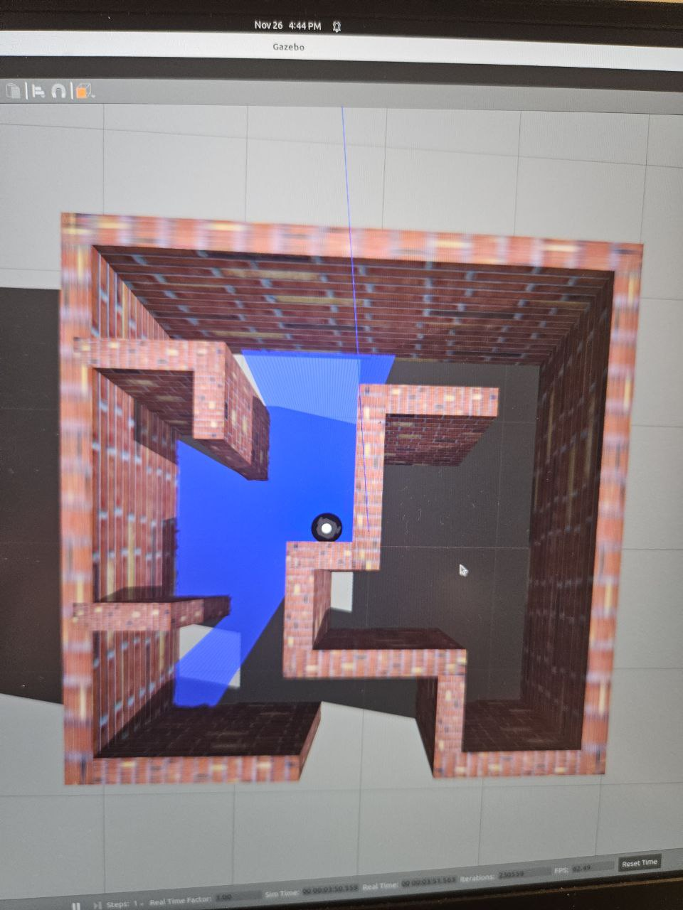
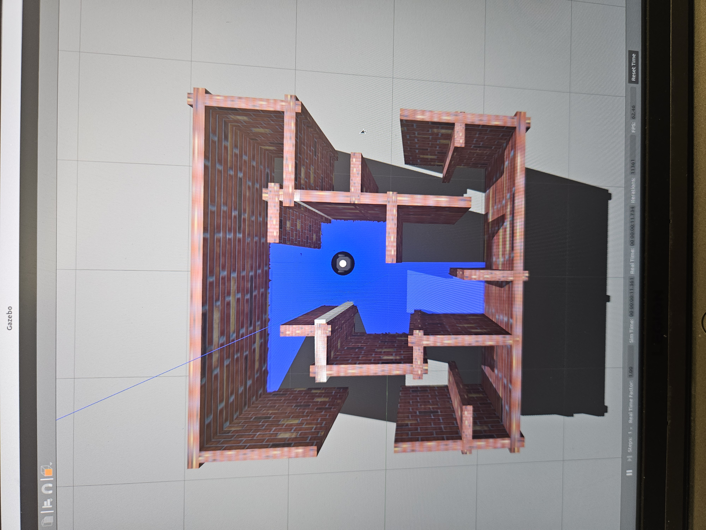

Project 3
Develop Project Management Skills with reference to Project Management Body of Knowledge (PMBoK) and design a maze-solving algorithm with the use of Robot Operating System 2 (ROS2) Framework without any hardware.
Project Management Knowledge Areas covered include Scope, Cost, Schedule, Risk, Procurement, Resource, Quality, Communications, Stakeholder and Integration.
Demonstrated proficiency in ROS2 framework by designing a 5m x 5m maze in Gazebo and developing a (self-taught) Python algorithm with obstacle avoidance to autonomously navigate a Turtlebot3 through the maze in Gazebo, without utilizing teleop (manual intervention).


